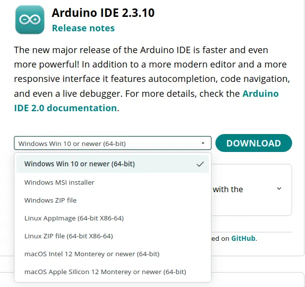
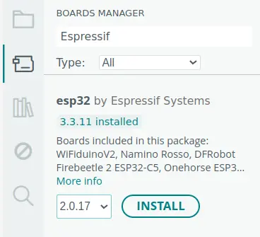
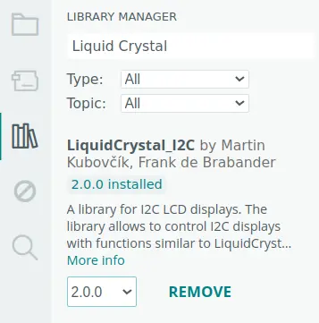
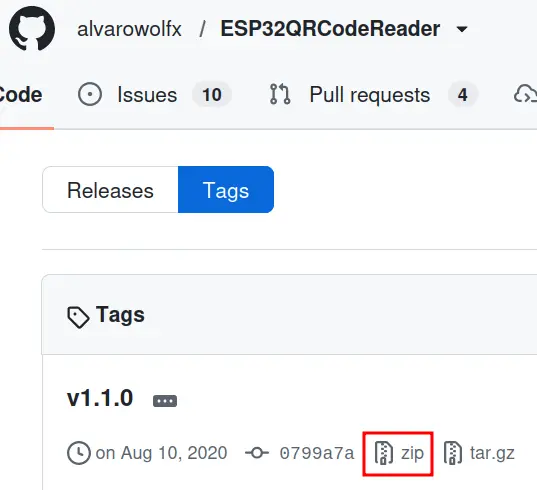

Software Installation
1. Arduino IDE
The Arduino IDE is the official, open-source software used to write, compile, and upload code to Arduino boards and compatible microcontrollers.
1.1 Installation
- Visit official Arduino website. Or use this link.
- Click on Download.
- Select your Operating System and package format.
- Open package and follow on-screen instructions.

2. Espressif Board
Provides ESP32 board support for Arduino IDE and allows the ESP32-CAM firmware to be compiled and uploaded.
2.1 Installation
- Open Arduino IDE.
- Open Board Manager.
- Search for Espressif.
- Select version 2.0.17 (Project is tested with this version).

3. LiquidCrystal_I2C
It is an external code library for the Arduino IDE that allows you to control alphanumeric Liquid Crystal Displays (like 16x2 or 20x4 screens) using the I2C communication protocol.
3.1 Installation
- Open Arduino IDE.
- Click on Library Manager icon.
- Search for Liquid Crystal.
- Look for LiquidCrystal by Martin Kubovcik, Frank de Brabandar.
- Select version 2.0 in dropdown.
- Click on Install.

4. ESP32QRCodeReader
Open source library that enables ESP32 microcontrollers equipped with a camera (like the ESP32-CAM) to scan and decode QR codes in real-time.
4.1 Download
- Open a web browser and search for ESP32QRCodeReader.
- Find the repository by alvarowolfx. Or use this link.
- Click on Tags.
- Select v1.1.0.
- Click on zip icon to download the source code.
- Wait for the download to complete.
4.2 Prepare
- Extract the .zip file into a directory.
- Go to directory > include.
- Move .h files to the root of the library directory.
- Compress library folder into a .zip file.
4.3 Install
- Open Arduino IDE.
- Click on Sketch → Include Library → Add .ZIP library.
- Select the library .zip file.
- Wait for the installation to complete.
